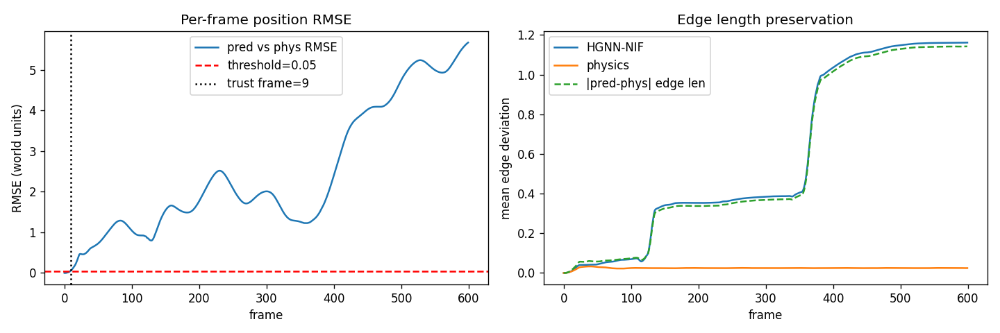
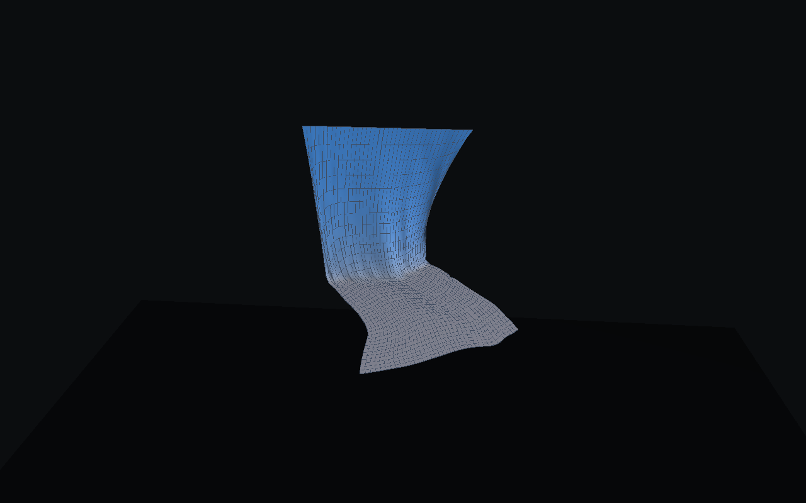
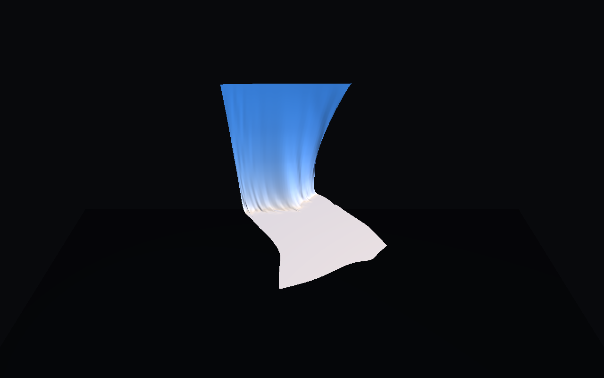
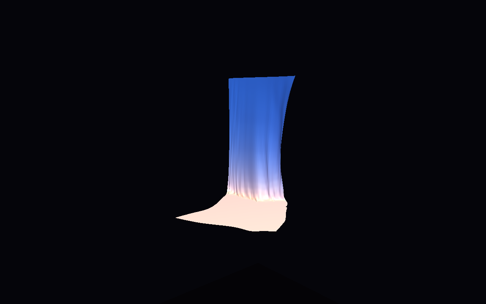
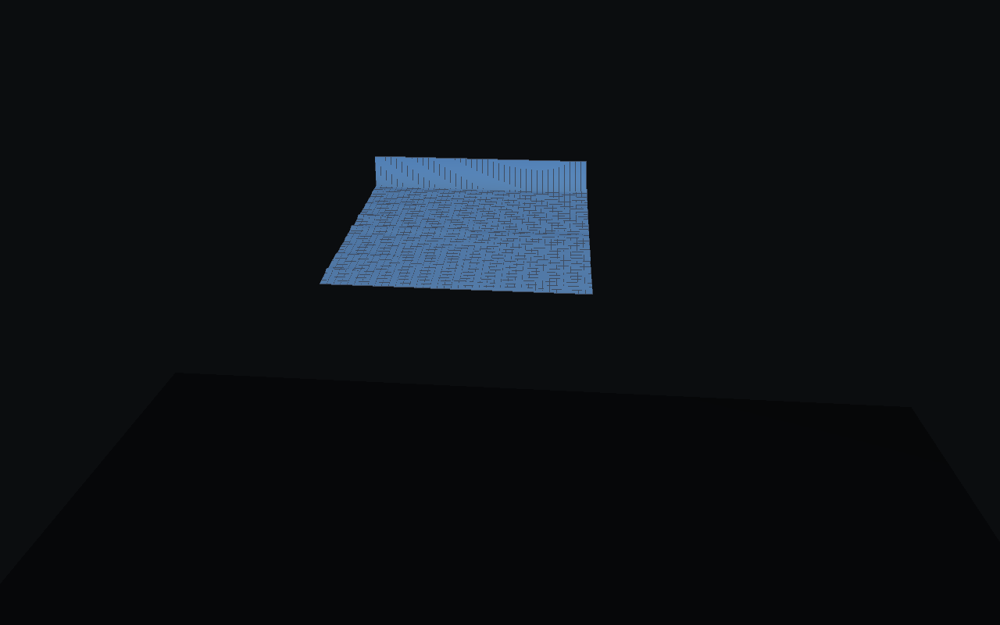
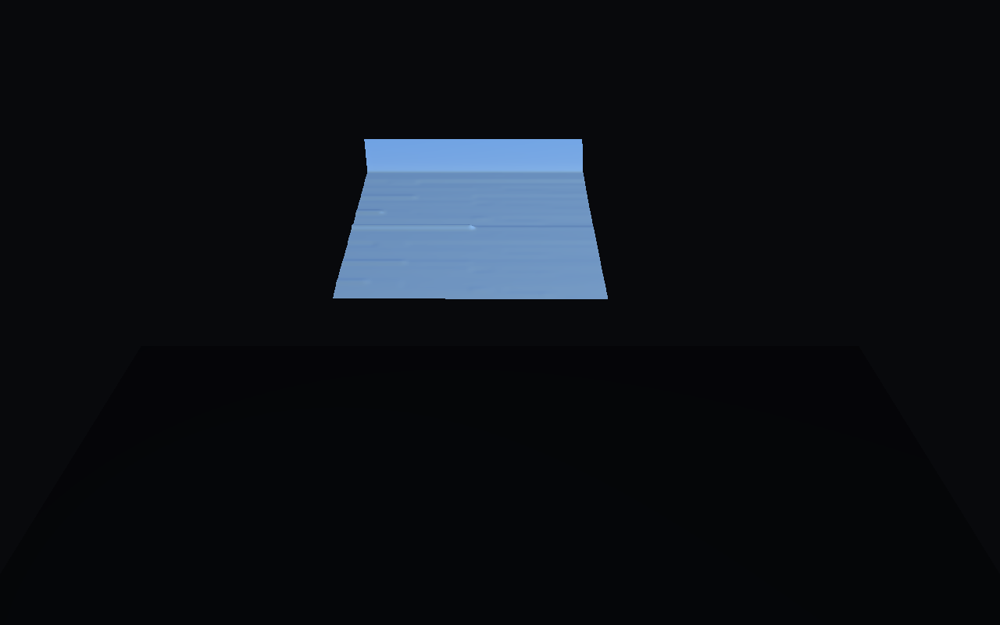
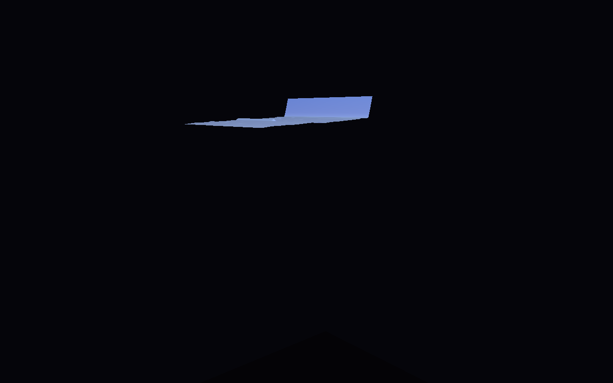

The baseline on the left is an explicit mass-spring simulator: accurate but it runs physics every step. The right is the trained HGNN-NIF predicting the next frame from a 3-frame history. Identical seed, identical topology, rendered with the same camera and lighting so visual differences are the model, not the graphics.
After frame 9, autoregressive error compounds. The HGNN rollout diverges from physics — edges stretch, the surface becomes jagged. This is expected for a pure next-frame predictor without re-anchoring.
A plain GNN on the cloth graph captures short-range interactions but has no sense of hierarchy — long-range folds demand ever-deeper message-passing stacks. A pure SIREN field is continuous and differentiable, but knows nothing about which vertices are actually connected. HGNN-NIF composes the two.
history (3 × N × 3) next-frame positions + velocity
│ ▲
▼ │
┌──────────────┐ cross-attn ┌──────────────┐ │
│ fine HGNN │ ◀──────────────▶ │ coarse HGNN │ │
│ 40×40 · 64d │ │ 20×20 · 64d │ │
└──────┬───────┘ └──────┬───────┘ │
│ per-vertex latent (64) │ │
▼ ▼ │
┌─────────────────────────────────────────┐ │
│ SIREN (128 × 3, ω₀ = 30) — conditional │ ──▶ continuous field ┘
└─────────────────────────────────────────┘
All numbers are per-frame RMSE in world units (1 unit ≈ cloth side length). The trustworthy window is defined as the longest prefix where RMSE stays under 0.05.

The interactive viewer ships with three dataclass-driven presets. Same scene, different lighting, different fidelity, different intent. Physics stills at frame 60 (settled cloth); HGNN stills at frame 8 (within trust window).






Cloth is a graph. Springs connect neighbours; forces propagate only through edges. A graph network is the natural encoder — and going hierarchical (fine ↔ coarse with cross-attention) lets a single forward pass see both stitch-scale wrinkles and large-scale wind folds without stacking 20 GCN layers.
Once you've encoded the graph state as per-vertex latents, those latents condition a SIREN that can be queried at any continuous coordinate. That is what makes the "NIF" in HGNN-NIF: the decoder is an implicit field, not a per-vertex MLP. You can ask it for positions at arbitrary UV coordinates, upsample the display surface, or eventually decouple the render-time mesh from the physics mesh.
The trust window here is 9 frames — 0.30 s of predicted motion before autoregressive drift pushes the RMSE above 0.05. That's the honest answer from a pure next-frame predictor. Extending it is a scaling-and-data question (longer sequences, richer loss, maybe differentiable physics in the loop), not an architecture question.